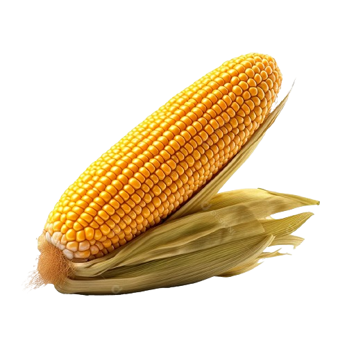

Produção de milho milho produzido no Brasil. Existem várias espécies de morango, sendo a fragaria a mais comum e cultivada em várias partes do mundo.
o milho era utilizado basicamente para a subsistência humana. Com o decorrer do tempo foi ganhando importância e transformou-se no principal insumo para a produção de aves e suínos, além de sua importância estratégica para a segurança alimentar do brasileiro ao longo das últimas décadas. O Brasil já é o segundo maior exportador mundial de milho, superado apenas pelos Estados Unidos. O produto é reconhecido por sua boa qualidade e por garantir o abastecimento em vários países exatamente no período da entressafra dos EUA. Os principais países importadores do milho aqui produzido são o Vietnã, Irá, Coréia do Sul, Japão, Taiwan, Egito e Malásia. o milho era utilizado basicamente para a subsistência humana. Com o decorrer do tempo foi ganhando importância e transformou-se no principal insumo para a produção de aves e suínos, além de sua importância estratégica para a segurança alimentar do brasileiro ao longo das últimas décadas. O Brasil já é o segundo maior exportador mundial de milho, superado apenas pelos Estados Unidos. O produto é reconhecido por sua boa qualidade e por garantir o abastecimento em vários países exatamente no período da entressafra dos EUA. Os principais países importadores do milho aqui produzido são o Vietnã, Irá, Coréia do Sul, Japão, Taiwan, Egito e Malásia. 